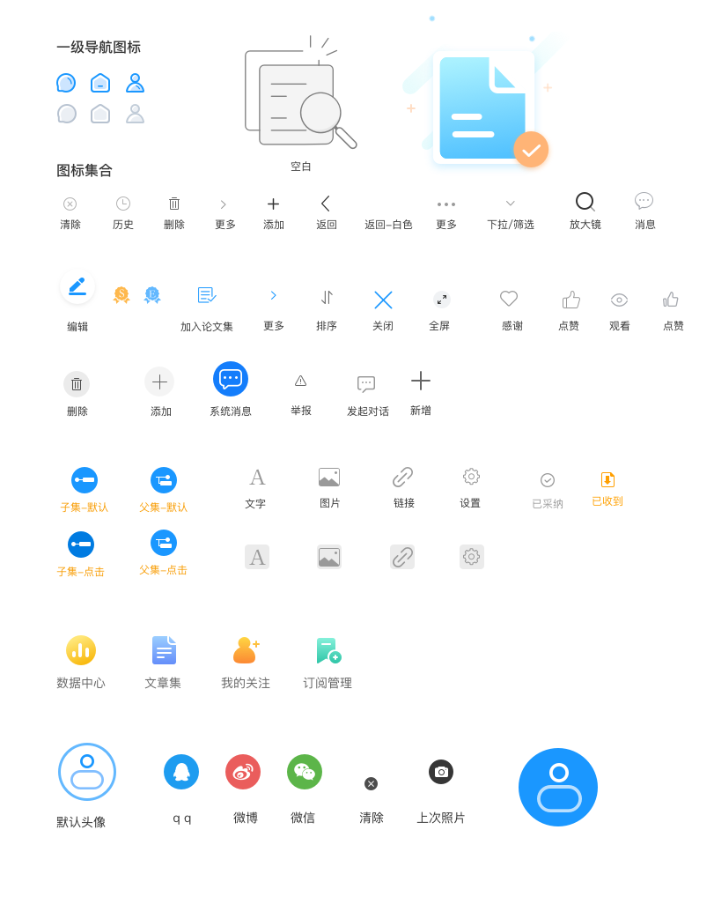

<ion-header>
  <ion-toolbar>
    <ion-buttons slot="start">
      <ion-back-button text="返回" color="dark"></ion-back-button>
    </ion-buttons>
    <ion-title></ion-title>
    <ion-buttons slot="end">
      <ion-icon slot="icon-only" name="more"></ion-icon>
    </ion-buttons>
  </ion-toolbar>
</ion-header>

<ion-content>
  <ion-grid>
    <ion-row align-items-center>
      <ion-col class="col-title">
        
        <div class="sub-title">
          <div style="margin-bottom: 5px;"><ion-label>科研论文</ion-label></div>
          <ion-text>3,678</ion-text>
          <ion-note>人关注</ion-note>
        </div>
      </ion-col>
      <ion-col style="text-align: right;">
        <ion-button size="small">+ 关注</ion-button>
      </ion-col>
    </ion-row>
    <ion-row class="row-content">
      <ion-col>
        <ion-text class="words">鲁迅（1881年9月25日－1936年10月19日），曾用名周樟寿，后改名为周树人，曾字豫山，后改豫才，曾留学日本仙台医科专门学校（肄业）。“鲁迅”是他1918年发表《狂人日记》时所用的笔名，也是他影响最为广泛的笔名，浙江绍兴人。著名文学家、思想家、民主战士，五四新文化运动的重要参与者，中国现代文学的奠基人。毛泽东曾评价：“鲁迅的方向，就是中华民族新文化的方向。</ion-text>
        <ion-text class="ellipsis">...</ion-text>
        <ion-text class="expand">展开</ion-text>
      </ion-col>
    </ion-row>
    
    <div class="tab-bar">
      <div
        *ngFor="let item of tabBarData"
        (click)="tabBarChange(item)"
        [ngClass]="{'active': item.value === currentTab.value}">{{item.name}}</div>
      <!--<div>文章</div>-->
      <!--<div class="active">相关期刊</div>-->
      <!--<div>作者</div>-->
      <!--<div>导图</div>-->
    </div>
  
    <app-article *ngIf="currentTab.value === 'article'"></app-article>
    <app-magazine *ngIf="currentTab.value === 'magazine'"></app-magazine>
    <app-author *ngIf="currentTab.value === 'author'"></app-author>
    <app-map *ngIf="currentTab.value === 'map'"></app-map>
  </ion-grid>
</ion-content>